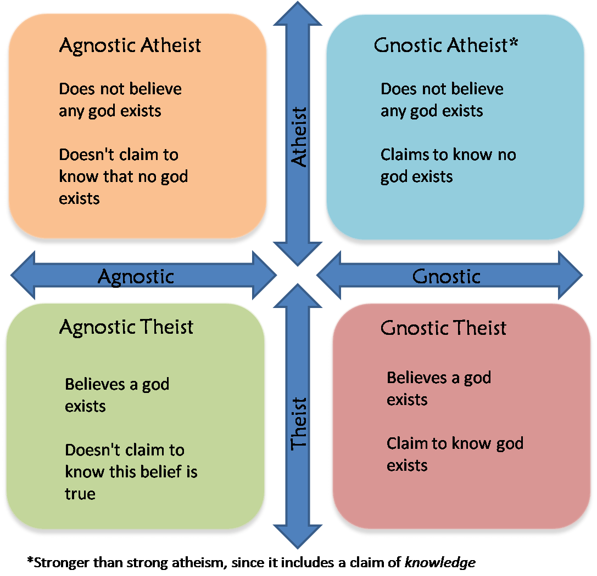

You didn't click "yes", so you're not a theist, right? So you do not or cannot affirm a positive belief in god(s)? The word we use to describe this (someone who is not a theist) is atheist.
There's a common misperception that being an atheist means you say "no god(s) exist", while an agnostic is some middlegrounder* who says "I don't know either way". But the truth is, these labels exist in different categories and are in no way mutually exclusive. Most atheists you meet are also agnostic (and vice versa) because they don't affirm theism as a belief, yet don't claim to know that no god(s) exist.
Here's a graphic that I find helpful in explaining this:
**There is no middleground between "I believe in god(s)" and "I do not believe in god(s)". Conversely, there's no middleground between "I know god(s) exist" and "I do not know god(s) exist". So I would contend that the middleground agnostics are just very confused agnostic atheists.
You are under no obligation to identify with / adopt labels you're not comfortable using.
I'm just telling you what's technically the case (should you accept the word usages described).
I can certainly understand why some people don't want or aren't ready to call themselves an atheist — it's a big step to take. It's also the case (sadly) that there's a number of places where "atheist" is a charged word that evokes all sorts of negative stereotypes and unfounded assumptions. It can also cause upset among religious family members/friends/employers/etc. The rule of thumb is not to tell people you're an atheist unless you're prepared to deal with the worst possible outcome it could have.
Then don't use it.
I'm not a prescriptivist who thinks a word should have meaning by authority, but will argue (vociferously so)* that no other usages make sense.
You might have heard that atheists claim "there are no god(s)", but the logical counterposition to "I believe in god(s)" is "I do not believe in god(s)" — not "I believe no gods exist". These two statements sound the same, but there's a very important difference, which I'll demonstrate with a quick thought experiment:
**So long as it's not getting in the way of a more important exchange of ideas. "If labels get in the way, chuck 'em out" as Matt Dillahunty advises.
It's okay to change your mind. What's important is that you've taken time to reflect on your position.